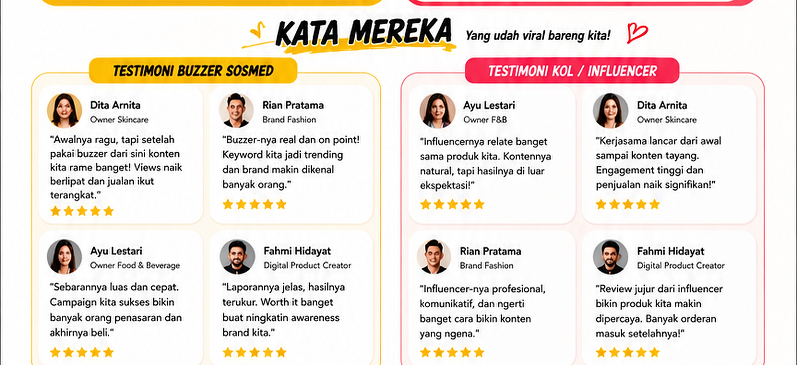

<!-- Replace only the existing testimonial <picture> with this block. -->
<section class="ana-section" id="testimoni" aria-label="Testimoni klien">
  <picture>
    <source type="image/webp" srcset="assets/03-testimonials-sharp@2x.webp 2x, assets/03-testimonials-sharp@4x.webp 4x">
    
  </picture>
</section>
